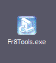
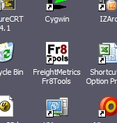

|
providing Shipping
Risk Management Solutions |
System Requirements and Installation
Fr8Tools is easy to install and use and has minimal system requirements.
Fr8Tools requires an x86 architecture personal computer (a standard PC) running
either Windows 2000 professional or Windows XP operating system. The computer
must also have installed Microsoft's Excel version XP or newer (Office 2002 and
Office 2003).
| Fr8Tools is installed by running ("double
click") the setup program, which is called Fr8Tools.exe |
 |
Simply follow the setup instructions. There are no complicated choices to make.
After a couple of minutes Fr8Tools will be installed.
| Fr8Tools setup places an icon on your
desktop and under the Start menu. |
 |
When installed Fr8Tools can be run by double "clicking" on the desktop icon, or
by selecting the Fr8Tools item from the Start menu.
© 2005. FreightMetrics